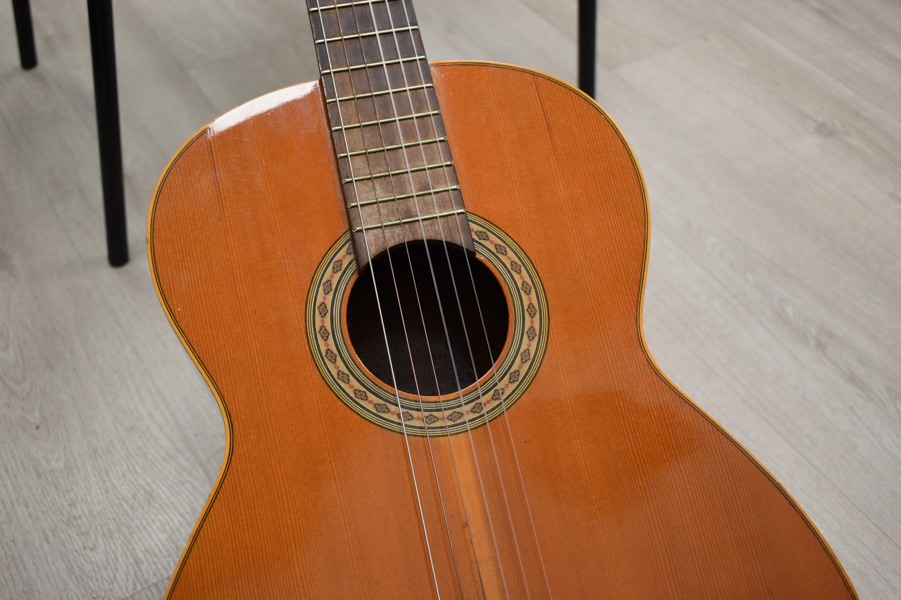
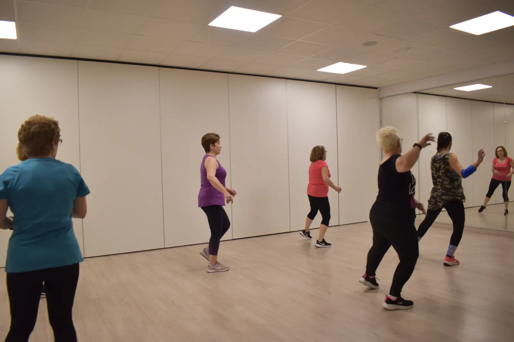
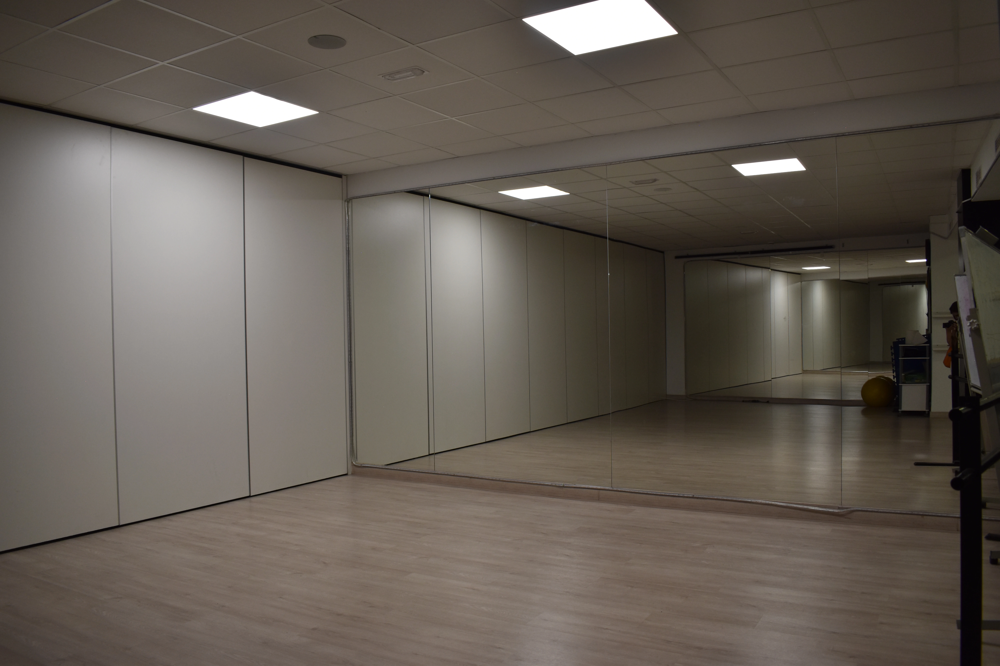

Clases de danza para niños en Leganés: cómo elegir bien
Una guía para familias que quieren encontrar una actividad artística segura, motivadora y cercana.
Leer destacado →Contenido útil para familias, alumnos y personas que buscan actividades de danza, música y bienestar en Leganés.
Artículos principales para resolver dudas antes de elegir clase, actividad o escuela en Leganés.
Una guía para familias que quieren encontrar una actividad artística segura, motivadora y cercana.
Leer destacado →
Consejos para empezar música desde cero o retomar un instrumento con acompañamiento.
Leer destacado →
Ideas para mejorar movilidad, coordinación y bienestar en un ambiente de confianza.
Leer destacado →Consejos para familias que buscan una escuela de danza cercana, segura y motivadora.
Leer más →
Qué tener en cuenta antes de escoger instrumento, profesor y formato de clase.
Leer más →Movimiento, baile y coordinación en un entorno cercano.
Leer más →
Diferencias entre Pilates y Zumba y cómo elegir la actividad adecuada.
Leer más →

Qué valorar antes de reservar una sala para formación o ensayo.
Leer más →